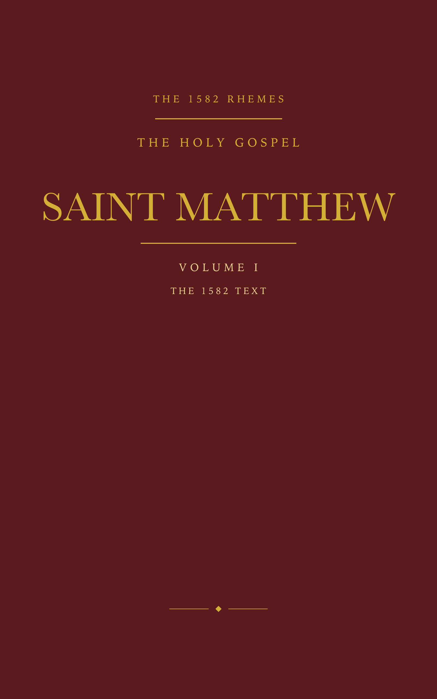
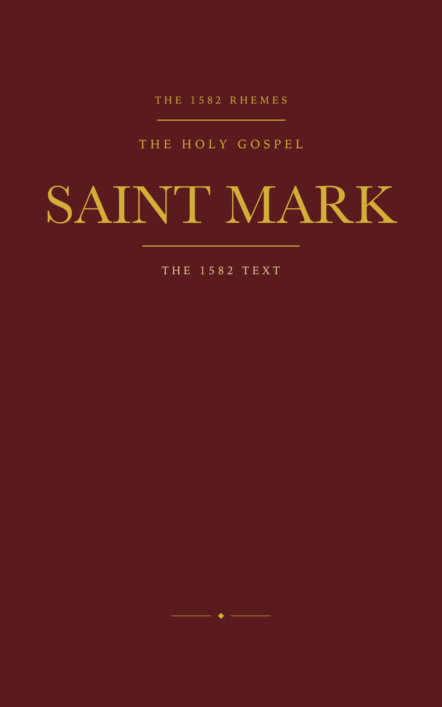
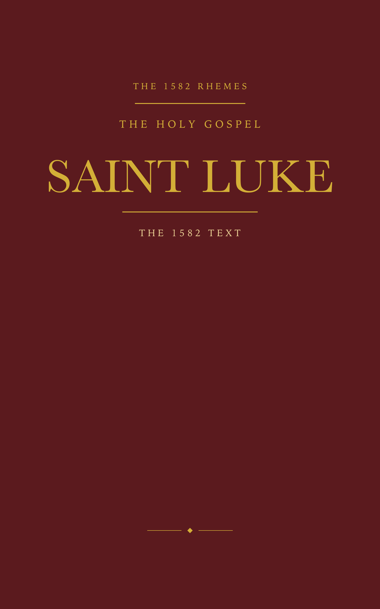
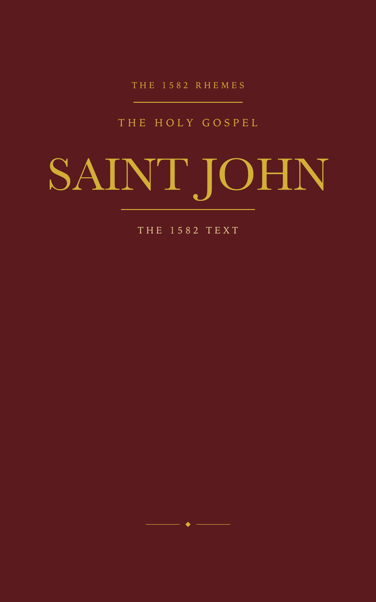
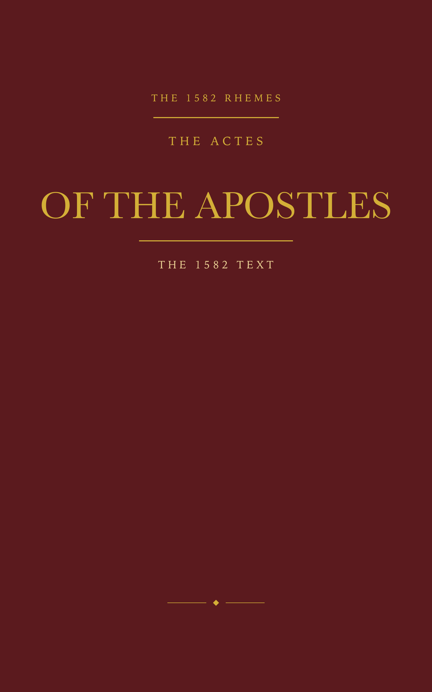
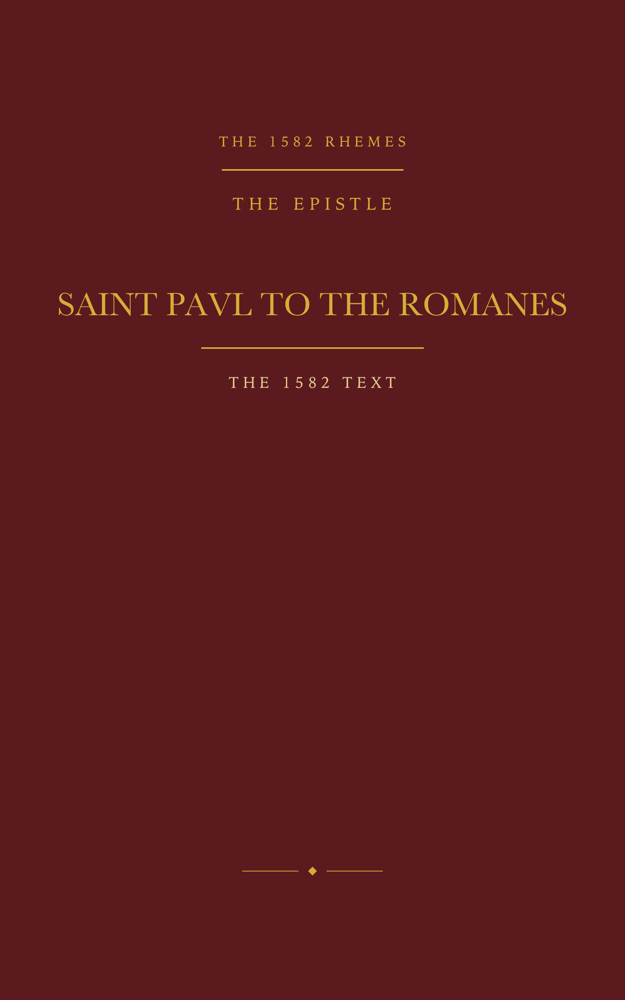
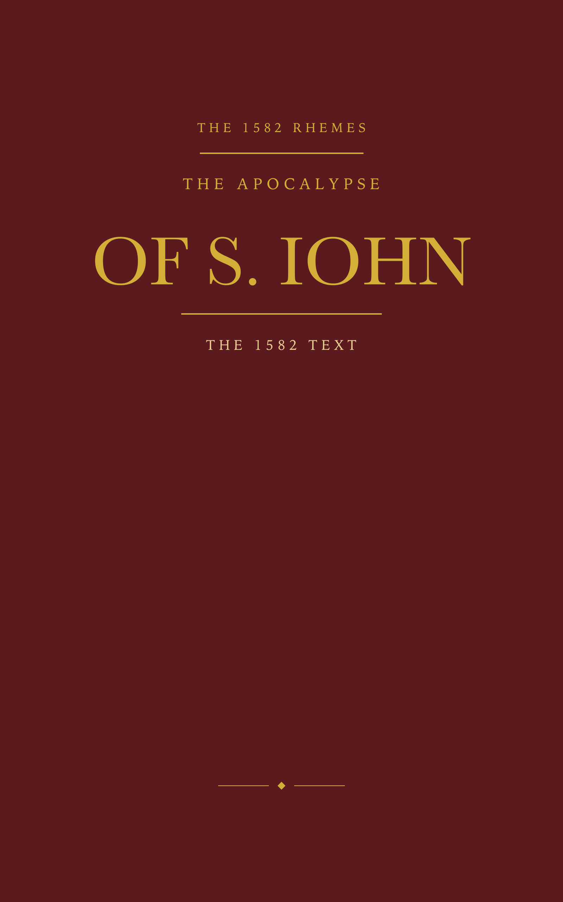

Matthew
196 pp · text | 121 pp · annotationsThe first Gospel in the series: the 1582 text as printed, with the marginal notes and the chapter annotations intact — and the annotations again in present-day English.
Mark Mann-Harris • Birthing Awareness Publishing
“The text as it stood. The annotations as they meant then.”
Thirty years before the King James Version, Catholic scholars translated the New Testament under persecution in Rheims. This is that text as it was printed — and, separately, the annotations every modern edition discarded. The series begins with Matthew, Mark and Luke.
Free companions Becoming Catholic, coming back, preparing for a sacrament, or learning to pray — there are free guides for all of that.
The Resources →Every traditional Catholic already owns a Douay-Rheims. Almost all of them own Challoner’s eighteenth-century revision, which is the standard text and which left the annotations out.
This is not a new Bible. It is the 1582 text as it was printed, and — separately, in English you can actually read — the annotations every modern edition throws away. The annotations are the product: argumentative, learned, and a direct window on how English Catholics read Scripture under persecution.
The Gospels
Each gospel is two books: the 1582 text, and the annotations in present-day English. The text is free as a PDF; both are printed and on Kindle.

The first Gospel in the series: the 1582 text as printed, with the marginal notes and the chapter annotations intact — and the annotations again in present-day English.

The shortest of the four and the fastest read. What the Rheims adds is the margin and the notes: the Fathers at the elbow, and the arguments of 1582 printed beside the text.

The fullest of the four and the most human: the infancy narratives, the parables of mercy, and the road to Emmaus. The 1582 text, and the annotations in present-day English.

The fourth Gospel, and the hardest annotations volume in the New Testament: the Trinity, the Bread of Life, and the See of Peter. In preparation.

The Acts of the Apostles: the Church's first thirty years — Pentecost, the first council, and the missions of Peter and Paul. The 1582 text, and the annotations in present-day English.

Paul's fullest argument: sin and grace, justification and the obedience of faith. The 1582 text, and the annotations in present-day English.

The Apocalypse of S. John: the seven churches, the beasts, and the city coming down out of heaven. The most argued-over annotations in the New Testament. The 1582 text, and the annotations in present-day English.
Witness how the 1582 Rheims translators argued their case in sixteenth-century print, using Matthew as the example, and how the annotations volume renders that exact polemic into clear, contemporary English.
“18. And vpon this rocke.] Vpon that which he said Peter was, wil he build his Church: and therfore by most euident sequele he foundeth his Church vpon Peter. And the Aduersaries wrangling against this, do against their owne conscience and knowledge: specially seing they know and confesse that in Christes wordes speaking in the Syriake tonge, there was no difference at al betwene Petrus and Petra…”
“Upon that which he said Peter was, he will build his Church; and therefore by most evident consequence he founds his Church upon Peter. And the adversaries, wrangling against this, do it against their own conscience and knowledge — especially seeing they know and confess that in Christ’s words, spoken in Syriac, there was no difference at all between Petrus and Petra…”
The annotations volume contains 250 chapter annotations and 432 marginal notes, keyed directly to the text volume.
For Father John Owens — faithful servant of Christ and friend.
The dedication is his because the work is. He asked the question that started it — what is it that makes the Douay-Rheims hard to read? — and the answer, the names, set the shape of the whole.
He chose Matthew, chose the King James as the reference, and read the first sample with a priest’s eye and a friend’s honesty. And when he explained why Challoner’s revision left the annotations out, the second volume began.
M. M-H.
This is the 1582 Rheims — the original editio princeps. It is completely distinct from Bishop Challoner’s eighteenth-century revision (1749–52), which modernized the language and notoriously omitted the original polemical annotations.
No. These volumes are a historical and scholarly republication of the 1582 editio princeps and its contemporary rendering. They do not carry a modern ecclesiastical imprimatur, nor are they offered for liturgical use.
The text volume preserves the original 1582 spelling, contractions, and marginal notes to provide an uncompromising historical witness. Where names differ between Rheims and the King James Version, KJV forms are supplied in square brackets for immediate recognition.
Not strictly. The annotations stand on their own as a fascinating reading text of sixteenth-century Catholic apologetic commentary. However, because every note is keyed chapter and verse, pairing the annotations with the text (or with any standard Douay-Rheims) unlocks their full explanatory power.
Yes — all 1,071 verses, with the marginal notes and the annotations. It is a working edition: complete, and open to correction. The paperback and the Kindle are the finished text.
The 1582 is public domain; the rendering is the labour. Every text volume is free as a PDF — no email, no list. The annotations are the books that are sold.
Cream paper, UK English, printed to order; Kindle editions alongside. The annotations are book-only — they exist in print and on Kindle, and in no other form.
Matthew
196 pp · text | 121 pp · annotationsMark
112 pp · text | 51 pp · annotationsLuke
187 pp · text | 94 pp · annotationsJohn
in preparationActs
206 pp · textRomans
97 pp · textThe free PDFs are working editions; corrections are welcome and go into the next printing. John is in preparation.